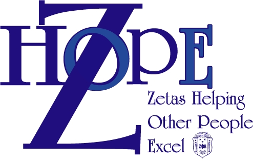
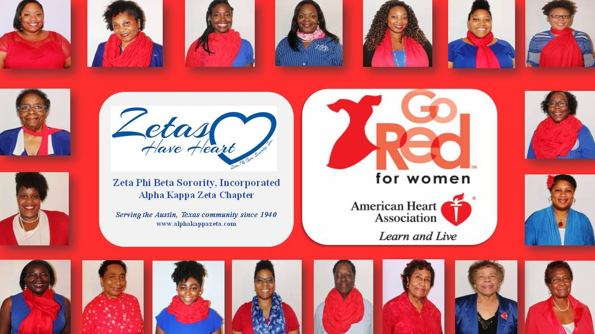

Between the years of 2001 - 2008, Zeta Phi Beta Sorority, Incorporated adopted and implemented its signature program: Z-HOPE.
Zetas Helping Other People Excel was approved at the 2008 National Boule as the National Service Program of Zeta Phi Beta Sorority, Inc.
It is a multi-faceted outreach program designed to strengthen participants in developing health promoting lifestyle choices across generations. It's primary focus is Women, Youth, Seniors, Men, and International Women of Color.
Z-HOPE promises to provide culturally appropriate activities in the communities we live to empower and promote HOPE (Helping Other People Excel). To do this, Zeta Phi Beta members devote thousands of hours of service each year via our National Signature programs. Individual chapters also participate in projects in their local communities.
Want to know more? Visit http://zphib1920.org/national-programs/z-hope/.
Current Initiatives
 The Alpha Kappa Zeta Chapter is collecting new or gently used handbags in support of "Handbags for Hope". Please contact a member if you would like to donate. Also, we will be collecting donations on Saturday, March 11, 2017 at 2:00 PM. You may drop them off at:
The Alpha Kappa Zeta Chapter is collecting new or gently used handbags in support of "Handbags for Hope". Please contact a member if you would like to donate. Also, we will be collecting donations on Saturday, March 11, 2017 at 2:00 PM. You may drop them off at:
1171 San Bernard St
Austin, Texas 78702
“Last year, The Project served more than 5,900 clients, impacting the lives of over 14,000 women and their children. We know how critical access to legal services is in helping victims begin their journey of becoming a survivor,” said Heather Bellino, Executive Director of Texas Advocacy Project. “When victims call our legal line it is often the first time they have ever spoken with an attorney to learn that they have rights and that they can get protection and safety. It is a life-altering moment. By placing The Project’s legal line inside the bags, victims will be armed with one of the strongest tools to break the cycle of violence – access to legal services.”

The color red represents strength, joy and power and during American Heart Month in February, it symbolizes the fight against heart disease in women. One in three women die of heart disease or stroke, according to the American Heart Association. Education and lifestyle changes, however, can prevent 80 percent of cardiac events.
“This is an important opportunity to raise awareness that heart disease is not just a man’s disease, to stop and honor the many people struggling with heart disease, and to celebrate the advances we’ve seen over the years against heart disease and stroke,” said American Heart Association CEO Nancy Brown.
The cause behind the color is Go Red For Women, a movement the AHA started more a decade ago to fight a life-threatening lack of awareness about heart disease in women, which extended to many physicians and researchers. Join Zeta in getting involved in the Go Red for Women movement and help us stop this disease before it stops any more of our mothers, sisters, daughters, friends – or ourselves.